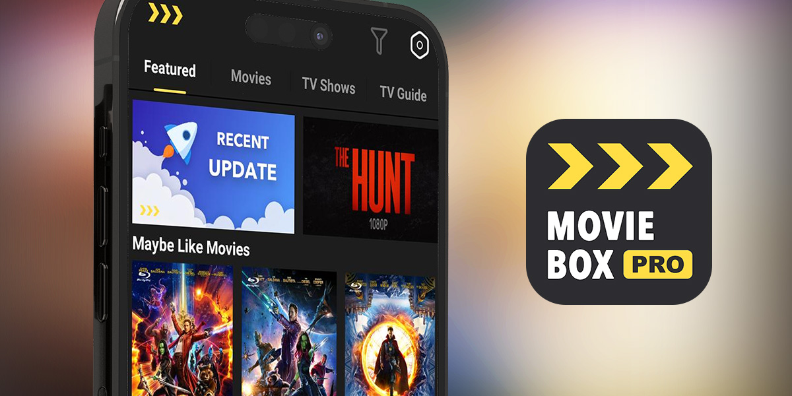

Moviebox Pro - Besy app for Watching Movies & TV Shows free

Moviebox App is one of apps for watching free movies and TV shows. But is it already the best free secure site you can find on the Internet? Let's find out everything about Movie Box Pro in this blog.
What is Moviebox Pro?
It is an online streaming platform that allows users to watch movies, TV shows, and other videos on their mobile devices.
Moviebox is available for download on a variety of platforms, including iOS, Android, and Firestick. The app is known for its easy-to-use interface, high-quality video playback, and fast streaming speeds. It also supports subtitles in multiple languages, as well as offline playback and downloading of videos for watching later.
However, Movie Box Pro is not for public access. It has become a private club called Moviebox Pro Private Garden and you must have an invitation to join.
With the two-factor authentication and encryption technology, this club allows you to access movies, music, games, and other content securely and privately.
What are the features of the Moviebox app?
It offers several features to enhance the streaming experience. Some of its notable features include:
-
Large Content Library: Movie Box Pro provides a large collection of movies and TV shows in different genres and languages, including Hollywood blockbusters, Asian dramas, and other popular titles.
-
High-Quality Streaming: The app supports high-quality video streaming, offering options for different resolutions to suit the viewer's preferences and internet connection.
-
Offline Downloading: Users can download movies and TV shows from MovieBox Pro for offline viewing. This feature enables users to enjoy content without requiring an active internet connection.
-
Subtitles and Multi-Language Support: Movie Box Pro supports subtitles in multiple languages, enhancing accessibility for viewers who prefer or require subtitles.
-
User-Friendly Interface: The app features a user-friendly interface that makes it easy to navigate through the content library, search for specific titles, and access various features and settings.
-
Personalized Recommendations: MovieBox Pro offers personalized recommendations based on users' viewing history and preferences, suggesting new content that may be of interest.
-
Bookmarking and Watchlist: Users can bookmark their favorite movies or add them to a watchlist, making it convenient to keep track of content they want to watch or revisit.
It's worth noting that the availability of features may depend on the specific version of Movie Box Pro and the platform or device being used.
Is Moviebox Pro free?
The answer is YES. MovieBox App offers both free and paid versions.
-
Movie Box free version: That provides access to a range of movies and TV shows without requiring a subscription or payment. However, it's important to note that the free version may have limitations, such as advertisements, restricted content availability, or lower video quality.
-
MovieBox Pro for premium or VIP version: That provides additional features and benefits. The premium version typically requires a subscription fee, which may grant users ad-free streaming, faster download speeds, access to exclusive content, and other premium features.
It's important to ensure that you download Movie Box Pro from a legitimate and trusted source, as there may be counterfeit or modified versions of the app that could pose security risks or lead to copyright infringement.
Is Moviebox Pro safe?
Using third-party streaming apps like MovieBox App involves inherent risks, including potential security vulnerabilities and legal implications.
It's advisable to evaluate these risks and consider using legal and authorized streaming services that prioritize user safety and content licensing.
To ensure the safety when using third-party streaming apps, you need to pay consider the following 5 points:
-
Source: Download from trusted sources to minimize security risks.
-
Device Security: Ensure your device has updated security measures to protect against potential threats.
-
Privacy: Review permissions and privacy policies to safeguard personal information.
-
Legal Implications: Accessing copyrighted content without authorization can have legal consequences.
-
User Reviews: Consider feedback from other users to gauge the app's safety and reliability.
Is Moviebox Pro legal?
MovieBox Pro, like many other streaming applications, operates in a legal gray area.
While the application itself may not directly distribute or host copyrighted content, it often provides access to copyrighted movies and TV shows without proper authorization from copyright holders. This can potentially infringe upon copyright laws in many jurisdictions.
It's important to note that copyright laws vary by country, and what may be considered legal or illegal can differ accordingly.
In some regions, streaming copyrighted content without proper authorization is considered a violation of copyright laws, while in others, personal use or streaming for educational purposes may be permitted.
How to sign up for Moviebox App
Movie Box Pro requires an invitation code that might take you up to several days (or even forever).
However, you can still make an account following these steps without wasting time waiting. Be noted that it will not provide VIP access for free, apart from the initial 3-day trial.
-
Step 1: To use this method, you'll need an Android device or emulator. If you have a PC or Mac, you can utilize Bluestacks and sign in with your Google account.
-
Step 2: Download the file from the given website using your Android device or Bluestacks, and install it after enabling unknown sources if you haven't already.
-
Step 3: Once you have installed the app, launch it.
-
Step 4: Choose the Google account that you want to use to create an account.
With this approach, you can access the movieboxpro.app from a browser or any other platform of your choice using your Google account.
How to get Moviebox Pro invitation code
To get a Movie Box Pro invitation code, you will need to follow these steps:
-
Step 1: Log in to your Gmail account on your iOS or Android device.
-
Step 2: Send an email to [email protected] requesting an activation key with the message "Please send me an activation key. Thank you." It may take a few days to receive the activation key, as there may be a long queue for free requests.
-
Step 3: Check your inbox for the activation key, look in your sent mail folder if it's not there.
-
Step 4: Once you have the activation key, click on the activation link and then log in to MovieBox Pro via your Google account with your Gmail and password.
How to download Moviebox App
Movie Box is a third-party streaming application that allows you to watch movies, TV shows, and other videos on your device.
The process to download and install Movie Box Pro may vary depending on your device and operating system. Follow these general steps to download the app:
How to get Moviebox Pro for IOS devices
-
Step 1: Go to the Movie Box Pro website on your iOS device's web browser (MovieBox Pro is only supported for Safari users).
-
Step 2: Tap on the "Download" button for iOS.
-
Step 3: Tap on the "Install" button on the pop-up that appears.
-
Step 4: Wait for the app to finish installing, and then trust the developer in your device's Settings as follows: Go Settings ⇒ General ⇒ Profile & Device Management ⇒ Movie Box Pro application profile name ⇒ Trust ⇒ Verify.
-
Step 5: Open the app and sign in.
How to install Moviebox Pro for Android devices
-
Step 1: Go to the Movie Box Pro website on your Android device's web browser.
-
Step 2: Tap on the "Download" button for Android.
-
Step 3: Install the app by tapping on the downloaded APK file.
-
Step 4: Enable app installation from unknown sources in your device's Settings, if necessary.
-
Step 5: Open the app and sign in.
How to download Moviebox Pro on Firestick
-
Step 1: Turn on your Firestick and go to the "Settings" menu.
-
Step 2: Select "My Fire TV" or "Device" option and click on "Developer Options".
-
Step 3: Turn on the "Apps from Unknown Sources" option to allow installation from third-party sources.
-
Step 4: Go back to the Firestick home screen and search for "Downloader" using the search function. Select the "Downloader" app and install it on your device.
-
Step 5: Open the "Downloader" app and enter the URL "movieboxpro.app" to download the MovieBox App APK file.
-
Step 6: Once the download is complete, click on the "Install" button to start the installation process.
-
Step 7: After the installation is complete, click on "Open" to launch the Movie Box Pro app.
Note that the installation process may vary depending on the version of Firestick you are using. Also, be sure to download the APK file from a reliable source to avoid any security risks.
How to change language on Moviebox Pro
It offers language support for a variety of languages including English, Chinese, Korean, Japanese, and more. Here are the steps to change the language in the app:
-
Step 1: Open the app MovieBox Pro on your device.
-
Step 2: Tap on the "Profile" button in the bottom right corner of the app.
-
Step 3: Select the "Settings" option from the menu.
-
Step 4: Scroll down to find the "Language" option and tap on it.
-
Step 5: Choose the language you want from the list of available options.
-
Step 6: Once you have selected the new language, the app will automatically switch to the new language.
Note that the language settings may not apply to all parts of the app, and some content may only be available in certain languages.
Also, keep in mind that changing the language setting will not affect any subtitles or captions on videos. You may need to adjust those settings separately.
Why is Moviebox Pro not working?
MovieBox App may not work properly for various reasons. Here are some possible reasons why Movie Box App may not be working:
-
Outdated App Version: If you are using an outdated version of Movie Box Pro, the app may not function properly. Make sure that you have the latest version of the app installed on your device.
-
Server Issues: MovieBox Pro may experience server issues that can cause the app to stop working. If the servers are down or under maintenance, the app may not function properly.
-
Connectivity Issues: If your device is not connected to the Internet, or if the Internet connection is slow or intermittent, Movie Box Pro may not work properly. Make sure that your Internet connection is stable.
-
Installation Issues: If the app was not installed correctly, it may not work properly. Check that you have followed the correct steps for downloading and installing the app on your device.
-
Device Compatibility: MovieBox Pro may not be compatible with all devices. Check that your device meets the minimum system requirements to run the app.
If Movie Box Pro is not working, try troubleshooting the app by checking for updates, checking your Internet connection, or reinstalling the app. If the problem persists, you can contact the MovieBox Pro support team for further assistance.
How to delete a Movie Box Pro account
If you want to delete your Movie Box account, you can follow these steps:
-
Step 1: Open the MovieBox App on your device.
-
Step 2: Tap on the "Profile" button in the bottom right corner of the app.
-
Step 3: Select the "Settings" option from the menu.
-
Step 4: Scroll down and find the "Delete Account" option and tap on it.
-
Step 5: A confirmation screen will appear, asking you to confirm that you want to delete your account.
-
Step 6: Tap on "Yes" to confirm that you want to delete your account. And it will be permanently deleted.
Once you have your Movie Box account, there will be changes below:
-
All of your data, including your viewing history, watchlist, and preferences, will be permanently deleted and cannot be recovered.
-
You will lose access to any content that you have previously downloaded or purchased through the app.
What is the best Moviebox Pro alternative?
Moviebox Pro Private Garden feature is a huge turn-off, making users wait for a couple of days only to watch their movies of interest.
There are many apps like Moviebox Pro in terms of features and content. In which, OnStream offers everything you can find on Movie Box free, but with less hassle and better features.
If you need further convincing, here are some of OnStream's features:
-
Free of charge: OnStream is completely free and does not have any hidden fees, ads, or popups.
-
No sign-up or registration required: You can even stream on OnStream without creating an account.
-
Multi-subtitles: You can choose the language that is most convenient for you.
-
Multiple server options: OnStream offers various carefully selected servers from other sites/services, apart from a Torrent server.
-
Offline viewing: You can download your favorite movies and shows to watch later, with or without an Internet connection.
-
Custom favorites list: Keep track of the movies and shows you love and share them with others.
-
Daily updates: OnStream is one of the fastest to update its content.
We hope that this post about MovieBox App helps you decide which streaming service best suits your needs. While Moviebox Pro is an excellent choice for online movie and TV show streaming, OnStream is a better option if you are looking for premium-level features.